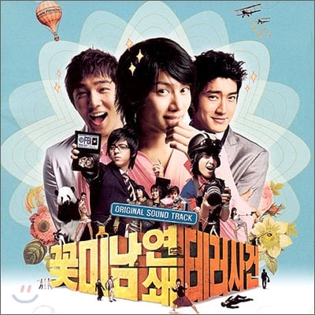
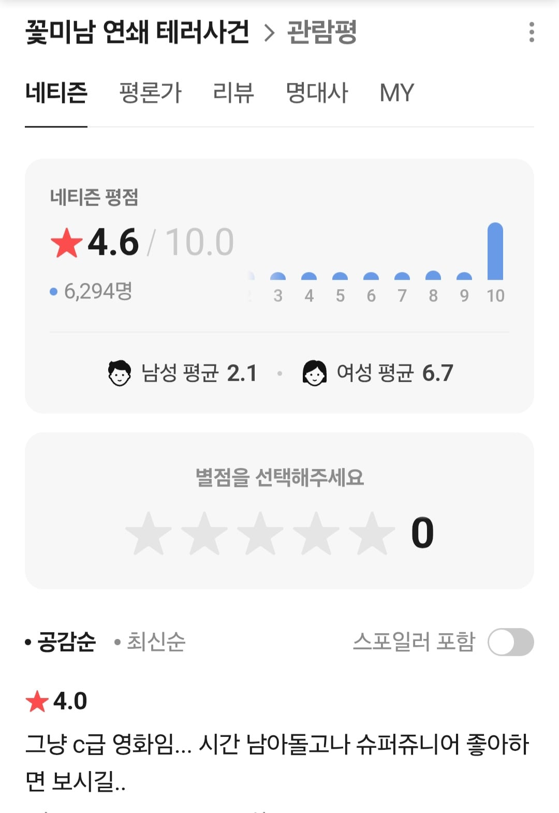
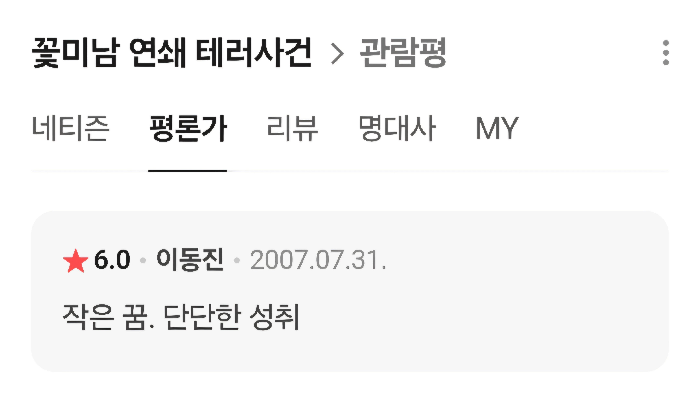
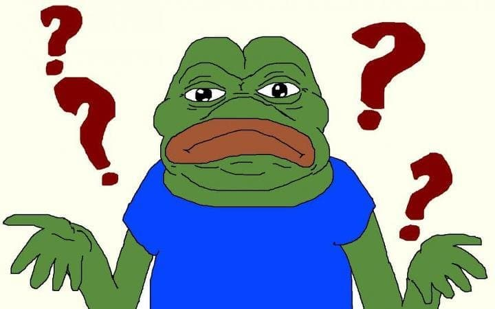

영화 꽃미남 연쇄테러사건
슈퍼주니어의 인기를 이용해서 만든 영화
GPT 2.5한테 각본 쓰라고 해도 더 잘 썼을 것 같은 영화임
줄거리
얼짱인 꽃미남을 누가 똥을 던져서 테러한다는 내용
결말도 흐지부지에
마지막에는 인도 영화처럼 슈주가 나와서 춤추면서 끝남
어린 나이에 이 영화를 본 나는 충격을 먹고 성인이 될때까지 한국영화를 안 보게 됨
네티즌 평점은 당시 슈주 팬들의 10점 공세에도 4점대

그렇다면 이 영화에 이동진이 준 점수는 과연 몇점일까


?
이 미스터리는 지금까지도 이해가 안된다.
본인이 슈주팬이었어도 용납이 안 될 수준
중간에 박평식이 왜나와